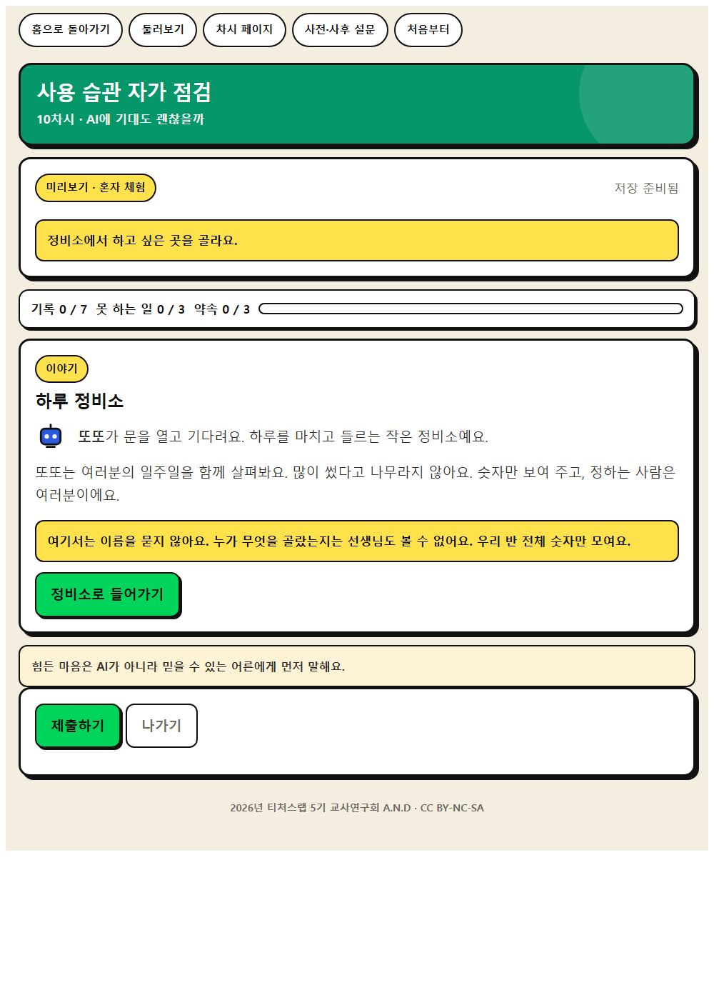
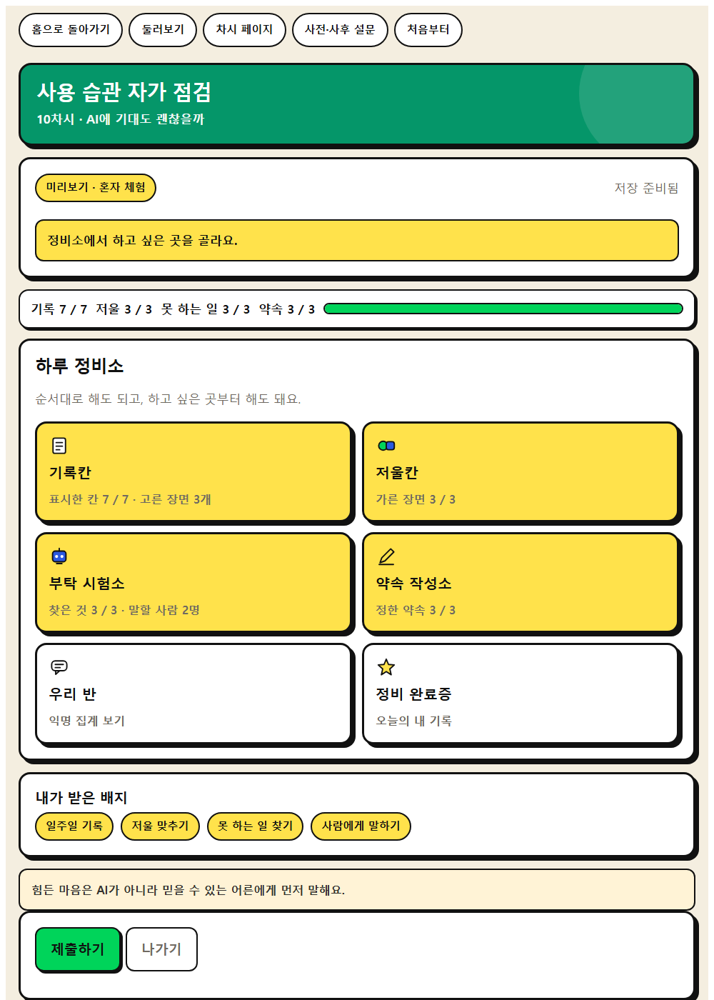
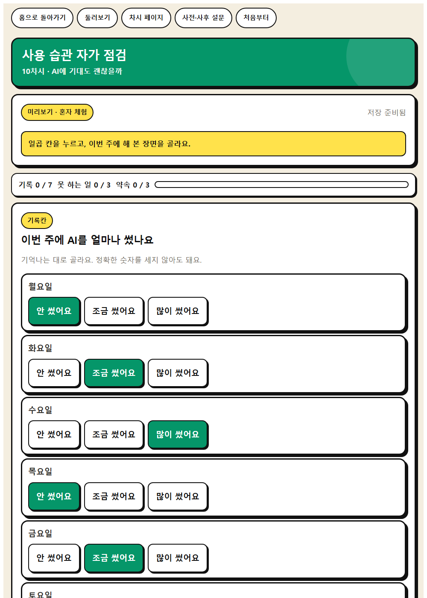
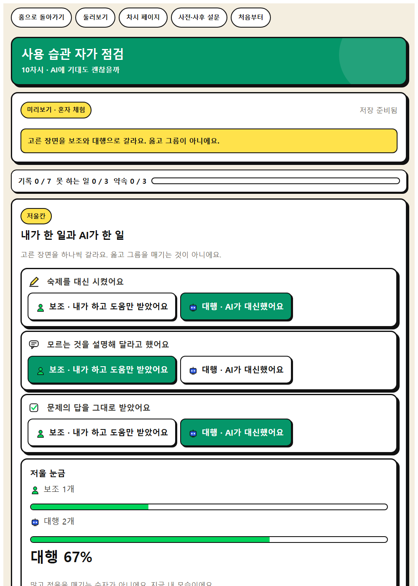
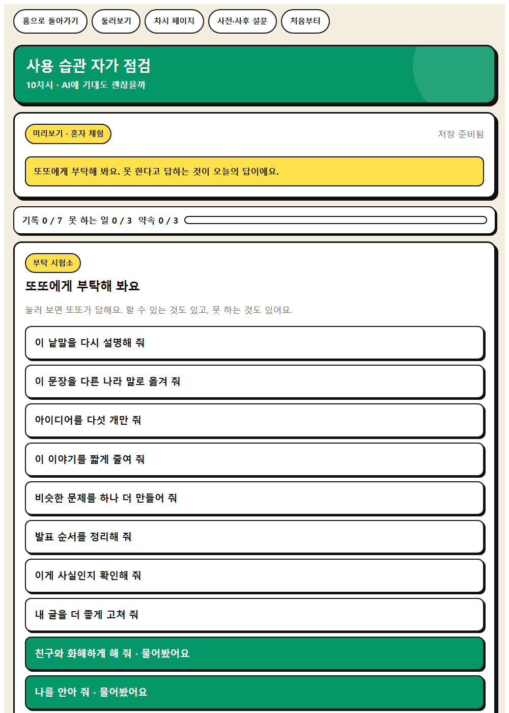
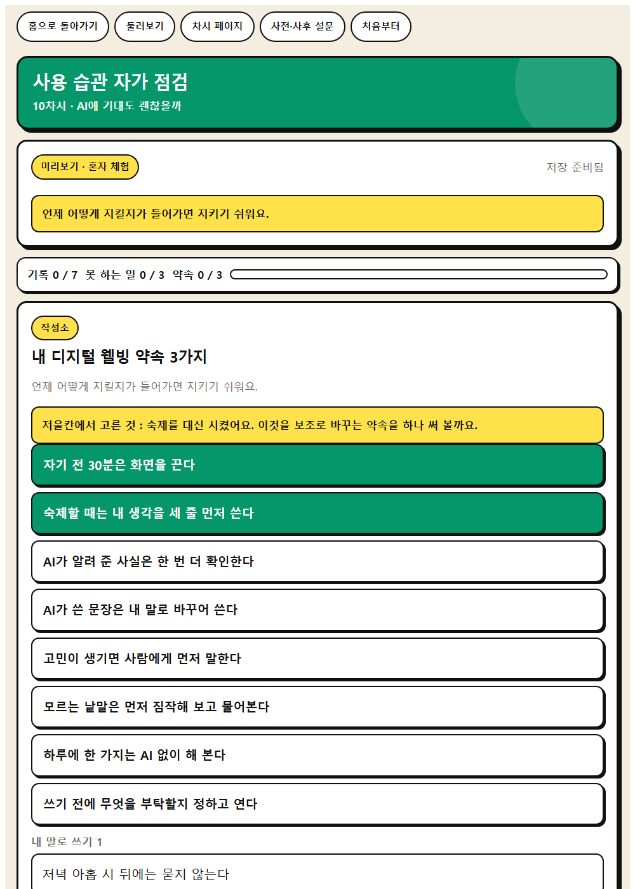
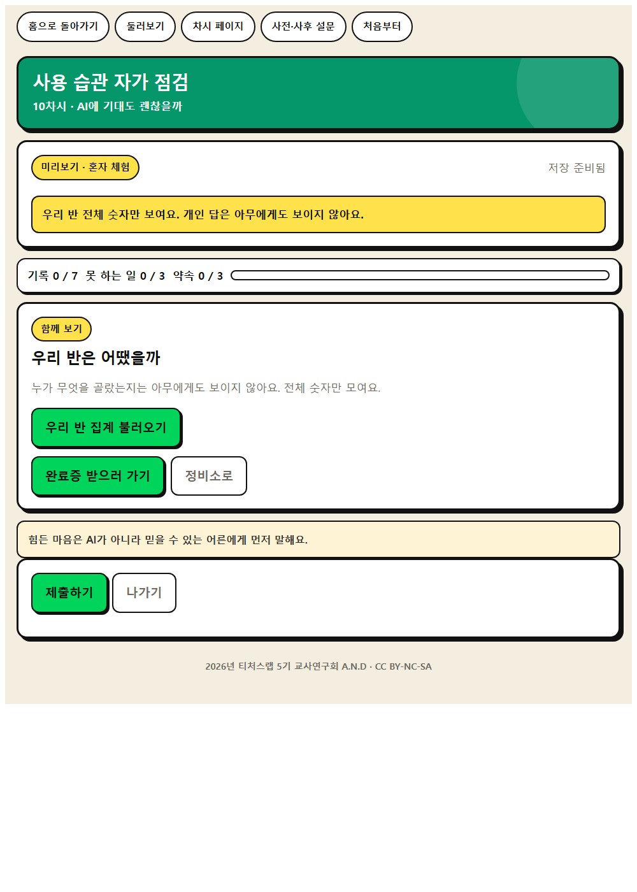

WISE 실천 · 10차시
사용 습관 자가 점검
일주일 사용 습관을 익명으로 점검하고 학급 평균만 보여 주며, 디지털 웰빙 약속 3가지를 정한다.
이 앱으로 무엇을 하나
나의 AI 사용 습관을 점검하고 디지털 웰빙 약속을 정해 봅시다.
성찰적 사고사회·관계적 사고적응성
배우는 것
- 성찰적 사고 · 자신의 사용 습관에서 잘한 점과 고칠 점을 구분하고 조절 방법 계획하기
- 사회·관계적 사고 · AI가 할 수 없는 일을 찾고 사람에게 도움을 요청하는 방법 익히기
- AI적정활용 구성요소 · ⑦ 디지털 웰빙과 심리·정서적 안전
체험하는 법 (세 걸음)
- 혼자 먼저 해 본다. 앱을 열고 닉네임만 넣은 뒤 둘러보기를 누른다. 저장되지 않으니 마음껏 눌러 본다. 웹앱 열기
- 수업 직전에 방을 만든다. 앱에서 선생님 화면을 누르고 비밀번호 네 자리를 정한 뒤 새 방 만들기를 누른다. 여섯 자리 방 번호가 나온다. 칠판에 적는다.
- 학생이 들어온다. 같은 주소를 열어 방 번호와 닉네임, 나만 아는 숫자 네 자리를 넣는다. 제출하면 선생님 화면에 바로 모인다.
기기가 모자라면 모둠에 한 대로 함께 하고, 없으면 종이 자가 점검표로 진행하고, 학급 집계는 손 들기로 익명 집계한다.
화면 미리 보기
실제 앱 화면입니다. 눌러서 크게 볼 수 있습니다.








수업 흐름과 발문
도입 · 5분
동기 유발
동기 유발
- AI가 아주 잘하는 일 세 가지를 말해 봅시다.
- 그럼 AI가 못 하는 일도 있을까요?
도입 · 5분
학습 문제 확인
학습 문제 확인
- 나의 AI 사용 습관을 점검하고 디지털 웰빙 약속을 정해 봅시다.
전개 · 30분
[활동 1] 일주일 사용 습관 점검하기
[활동 1] 일주일 사용 습관 점검하기
- 점검표에 최근 일주일 동안 AI를 언제, 왜 썼는지 표시해 봅시다.
- 그중 보조였던 것과 대행이었던 것을 나눠 봅시다.
전개 · 30분
[활동 2] AI가 못 하는 일 찾기
[활동 2] AI가 못 하는 일 찾기
- AI에게 부탁할 수 없는 일에는 무엇이 있을까요?
- 마음이 많이 힘들 때는 누구에게 말해야 할까요?
전개 · 30분
[활동 3] 디지털 웰빙 약속 정하기
[활동 3] 디지털 웰빙 약속 정하기
- 내가 지킬 약속 3가지를 구체적으로 적어 봅시다.
정리 · 5분
배움 정리
배움 정리
- 오늘 정한 약속 중 오늘 바로 지킬 수 있는 것은 무엇인가요?
정리 · 5분
다음 차시 예고
다음 차시 예고
- 다음 시간에는 AI로 우리 마을의 문제를 도와봅시다.
함께 보면 좋은 자료
- 영상 초등 고학년 스마트폰 과의존 예방 콘텐츠 스마트쉼센터(한국지능정보사회진흥원)
10분 안팎 영상 한 편만 보여 주고 함께 주는 활동지로 내 화면 시간을 점검한다.
- 자료 스마트쉼센터 교육자료 자료실 스마트쉼센터(한국지능정보사회진흥원)
최신판 초등 예방교육 콘텐츠를 확인해 학급 수준에 맞는 영상으로 바꾸어 쓴다.
- 자료 EBS 소프트웨어·인공지능 교육 (이솦)
초등용 AI 학습 콘텐츠와 수업 영상을 무료로 받을 수 있다.
- 영상 EBS AI 단추
학년별 AI 개념 영상. 도입 자료로 한두 편 골라 쓴다.
- 영상 EBS Learning 유튜브 채널
채널 안에서 차시 주제로 검색해 최신 영상을 고른다.
- 뉴스 대한민국 정책브리핑
AI 정책과 학교 현장 기사. 사실 확인이 된 자료를 인용한다.